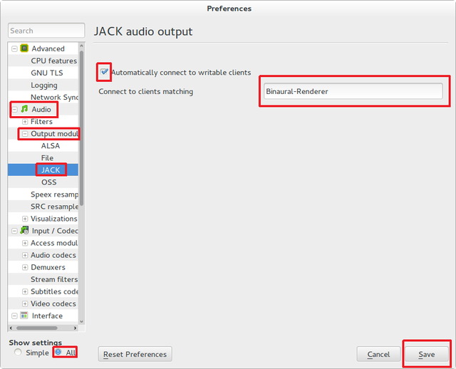

Compiling and Running the SSR¶
The following sections describe how to build and/or install the SSR on your computer. The SSR can be used on GNU/Linux and Mac OS X. The MS Windows version of SSR is experimental at this stage.
Choosing the Operating System¶
Well, first you’ll need a proper operating system. We recommend Debian GNU/Linux (http://www.debian.org/) or something Debian-based like Ubuntu (http://www.ubuntu.com/). The SSR should work on most modern Linux-distributions, though. You can also try Arch Linux (https://www.archlinux.org/), if you want. If you are reluctant to install a new operating system on your computer, you can also install any of the above-mentioned operating systems virtually, for example using https://www.virtualbox.org/.
If you happen to have Mac OS X installed on your computer, that’s OK, too.
The Debian Package¶
Thanks to IOhannes m zmoelnig, the SSR is available as a Debian package!
http://packages.debian.org/soundscaperenderer
Note
The Debian distribution comes in several flavors, such as stable, testing and sid (meaning “still in development”). At the time of writing, the soundscaperenderer package is part of “testing”, so if you have Debian “stable” installed, you will have to add the package sources for “testing” (you can try the Debian Sources List Generator). If it still doesn’t work, you should consider upgrading your whole system to “testing” or, if that’s not feasible, you can still compile and install the SSR from its source (see below for instructions).
You can install the soundscaperenderer package using your favorite package manager (apt-get, aptitude, synaptic, …), all dependencies should be installed automatically.
The package may or may not work on other Debian-based distributions like Ubuntu. Feel free to try it and report back to us.
Once the SSR is installed, move on to the section Running the SSR.
Getting the Source¶
If you didn’t receive this manual with the source code of the SSR, you have to download it from the SSR website http://spatialaudio.net/ssr or from the git repository. Refer to Section Compiling and Installing from the Git Repository in the latter case. Otherwise, continue reading this section.
Once you downloaded the tarball (the file that ends in .tar.gz), unpack it
and change to the newly created directory:
tar xvzf ssr-x.y.z.tar.gz
cd ssr-x.y.z/
Of course, x, y and z should have been replaced by the actual
version number. If you are new to Unix-like operating systems, you should try
shell completion: just start typing the beginning of the command (e.g. tar
xvzf ssr) and hit the Tab-key. Wow, the whole file name gets completed!
Configuring and Compiling¶
To build the SSR from source you have to configure first. Open a shell
and cd to the directory containing the source code of the package
and type:
./configure
This script will check your system for dependencies and prepare the
Makefile required for compilation. Section
Dependencies lists
the dependencies that must be installed on your system. The
configure script will signal if dependencies are missing. At
successful termination of the configure script a summary will show
up and you are ready to compile. If dependencies for certain modules of SSR
are missing that you are not going to use then you can simply disable the
according module by adding the appropriate argument to the call to the ``
configure`` script so that you do not need to bother with the dependencies.
Examples are
./configure --disable-ip-interface
./configure --disable-gui
See Section Hints on Configuration for details.
If everything went smoothly, you can continue with the next step:
make
This will take some time (maybe a few minutes). If you have a multi-core or
multi-processor computer you can speed up things by specifying the number of
processes you want to use with make -j8 (or any other number that you
choose).
Dependencies¶
The following list is a list of packages which you should install with the
package manager of your choice (apt-get, aptitude, synaptic, …).
However, if you prefer, you can of course also download everything as source
code and compile each program yourself.
make
g++ (at least version 4.7.3) or clang
libasio-dev
qtbase5-dev and libqt5opengl5-dev (To build the GUI)
libecasoundc2.2-dev or libecasoundc-dev
ecasound
libxml2-dev
libfftw3-dev
libsndfile1-dev
libjack-dev or libjack-jackd2-dev
jackd or jackd1 or jackd2
pkg-config
Extra dependencies for installing from the Git repository:
libtool
automake
Note that there are additional dependencies for some of the tracking systems that SSR supports. Refer to Section Head Tracking for further information.
To use a different compiler, you can specify it with CXX:
./configure CXX=clang++
Hints on Configuration¶
If you encounter problems configuring the SSR these hints could help:
Ensure that you really installed all libraries (
lib) with devel-package (develordev, where available) mentioned in Section Dependencies.If your QT5 library cannot be found during configuration, try running
export QT_SELECT=qt5. If there are problems with qt5’smocduring the build, you might need to add the corresponding folder (like/usr/local/opt/qt/bin) to yourPATH.It may be necessary to run
ldconfigafter installing new libraries.Ensure that
/etc/ld.so.conforLD_LIBRARY_PATHare set properly, and runldconfigafter changes.If a header is not installed in the standard paths of your system you can pass its location to the configure script using
./configure CPPFLAGS=-Iyourpath.
Note that with ./configure --help all configure-options are
displayed, e.g. in Section “Optional Features” you will find how to
disable compilation of the head trackers and many other things. Setting
the influential environment variables with ./configure VARNAME=value
can be useful for debugging dependencies.
Installing¶
Until now, everything was happening in the source directory (something like ssr -x.x.x/). To be really useful, the SSR should be installed on the system with the command
make install
On some systems you need root privileges for this step. However, it’s easier
if you set up your system to be able to do it as a normal user. On Debian,
it’s enough to add your username to the staff group. Just run this command
(as root or using sudo): adduser myuser staff (replacing myuser by
your actual user name). On other systems you may try something like this (
again, as root or using sudo): chown myuser:myuser /usr/local -R (
again, replacing myuser by your user name).
Uninstalling¶
If the SSR didn’t meet your expectations, we are very sorry, and of course you can easily remove it from your system with
make uninstall
Compiling and Installing from the Git Repository¶
In short, in order to install on your machine, open a terminal, create a
folder that will host the source code, cd to that folder, and type
git clone https://github.com/SoundScapeRenderer/ssr.git
to download the source code. Then execute
./autogen.sh
./configure
make
make install
inside the folder in which SSR resides. You’ll probably have to have root privileges for the installation. Of course, all dependencies of the compilation process apply. See Section Dependencies.
Running the SSR¶
Before you start the SSR, start JACK, e.g. by typing
jackd -d alsa -r 44100 in a shell or using the graphical user
interface “qjackctl”. Now, the easiest way to get a signal out of the
SSR is by passing a sound-file directly:
ssr YOUR_AUDIO_FILE
By default, the SSR starts with the binaural renderer; please use
headphones for listening with this renderer. Type ssr --help to get
an overview of the command line options and various renderers:
USAGE: ssr [OPTIONS] <scene-file>
The SoundScape Renderer (SSR) is a tool for real-time spatial audio
reproduction providing a variety of rendering algorithms.
OPTIONS:
Choose a rendering algorithm:
--binaural Binaural (using HRIRs)
--brs Binaural Room Synthesis (using BRIRs)
--wfs Wave Field Synthesis
--aap Ambisonics Amplitude Panning
--dca Distance-coded Ambisonics (experimental!)
--vbap Stereophonic (Vector Base Amplitude Panning)
--generic Generic Renderer
Renderer-specific options:
--hrirs=FILE Load the HRIRs for binaural renderer from FILE
--hrir-size=VALUE Maximum IR length (binaural and BRS renderer)
--prefilter=FILE Load WFS prefilter from FILE
-o, --ambisonics-order=VALUE Ambisonics order to use (default: maximum)
--in-phase-rendering Use in-phase rendering for Ambisonics
JACK options:
-n, --name=NAME Set JACK client name to NAME
--input-prefix=PREFIX Input port prefix (default: "system:capture_")
--output-prefix=PREFIX Output port prefix (default: "system:playback_")
-f, --freewheel Use JACK in freewheeling mode
General options:
-c, --config=FILE Read configuration from FILE
-s, --setup=FILE Load reproduction setup from FILE
--threads=N Number of audio threads (default N=1)
-r, --record=FILE Record the audio output of the renderer to FILE
--loop Loop all audio files
--master-volume-correction=VALUE
Correction of the master volume in dB (default: 0 dB)
--auto-rotation Auto-rotate sound sources' orientation toward the reference
--no-auto-rotation Don't auto-rotate sound sources' orientation toward the reference
-i, --ip-server[=PORT] Start IP server (default on)
A port can be specified: --ip-server=5555
-I, --no-ip-server Don't start IP server
--end-of-message-character=VALUE
ASCII code for character to end messages with
(default 0 = binary zero)
-g, --gui Start GUI (default)
-G, --no-gui Don't start GUI
-t, --tracker=TYPE Start tracker, possible value(s):
fastrak patriot vrpn razor
--tracker-port=PORT
A serial port can be specified, e.g. /dev/ttyS1
-T, --no-tracker Don't start tracker
-h, --help Show this very help information. You just typed that!
-v, --verbose Increase verbosity level (up to -vvv)
-V, --version Show version information and exit
Choose the appropriate arguments and make sure that your amplifiers are not turned too loud…
To stop the SSR use either the options provided by the GUI (Section
GUI) or type Crtl+c in the shell in which you started the SSR.
Keyboard actions in non-GUI mode¶
If you start SSR without GUI (option --no-gui), it starts
automatically replaying the scene that you have loaded. You can have some
interaction via the shell. Currently implemented actions are (all
followed by Return):
c: calibrate tracker (if available)p: start playbackq: quit applicationr: “rewind”; go back to the beginning of the current scenes: stop (pause) playback
Note that in non-GUI mode, audio processing is always taking place. Live inputs are processed even if you pause playback.
Recording the SSR output¶
You can record the audio output of the SSR using the
--record=FILE command line option. All output signals
(i.e. the loudspeaker signals) will be recorded to a multichannel wav-file
named FILE. The order of channels corresponds to the order of loudspeakers
specifed in the reproduction setup (see Sections
Reproduction Setups and
ASDF). The recording can then be used to analyze the SSR output or
to replay it without the SSR using a software player like “ecaplay” (http://eca.cx/ecasound/).
Configuration Files¶
The general configuration of the SSR (whether GUI is enabled, which tracker
to use, and most other command line arguments) can be specified in a
configuration file (e.g.
ssr.conf). By specifying your settings in such a file, you avoid
having to give explicit command line options every time you start the
SSR. We have added the example
data/ssr.conf.example,
which mentions
all possible parameters. Take a look inside, it is rather
self-explanatory. There are three possibilities to specify a
configuration file:
Configuration files are loaded in the following order, if certain options are specified more than once, the last occurrence counts. This means that it is not the last file that is loaded that counts but rather the last occurrence at which a given setting is specified.
/Library/SoundScapeRenderer/ssr.conf/etc/ssr.conf$HOME/Library/SoundScapeRenderer/ssr.conf$HOME/.ssr/ssr.confthe path(s) specified with the
--config/-coption(s) (e.g.,ssr -c my_config.file)
We explicitly mention one parameter here that might be of immediate
interest for you: MASTER_VOLUME_CORRECTION. This a correction in
dB (!) that is applied – as you might guess – to the master volume. The
motivation is to have means to adopt the general perceived loudness of
the reproduction of a given system. Factors like the distance of the
loudspeakers to the listener or the typical distance of virtual sound
sources influence the resulting loudness, which can be adjusted to the
desired level by means of the MASTER_VOLUME_CORRECTION. Of course,
there’s also a command line alternative (--master-volume-correction).
Head Tracking¶
We provide integration of the InterSense InertiaCube3 tracking sensor, the Polhemus Fastrak and the Polhemus Patriot. They are used to update the orientation of the reference (in binaural reproduction this is the listener) in real-time. Please read Sections Preparing Intersense and Preparing Polhemus if you want to compile the SSR with the support for these trackers.
Note that on startup, the SSR tries to find the tracker. If it fails, it continues without it. If you use a tracker, make sure that you have the appropriate rights to read from the respective port.
You can calibrate the tracker while the SSR is running by pressing
Return. The instantaneous orientation will then be interpreted as
straight forward, i.e. upwards on the screen (\(\alpha = 90^\circ\)).
Preparing InterSense InertiaCube3¶
If you want to compile the SSR with support for the InterSense InertiaCube3 tracking sensor, please download the InterSense Software Development Kit (SDK) from the InterSense website (http://www.intersense.com; Support → Downloads → Development and Troubleshooting Tools). Unpack the archive and place the files
isense.handtypes.hto/usr/local/include, andlibisense.so(the version appropriate for your processor type) tousr/local/lib.
The SSR configuration script will automatically detect the presence
of the files described above and if they are found, enable the
compilation for the support of this tracker. To disable this tracker,
use ./configure --disable-intersense and recompile.
If you encounter an error-message similar to
libisense.so: cannot open shared object file: No such file or directory,
but the file is placed correctly, run ldconfig.
Make sure that you have the required access rights to the tracker before starting SSR. For you are using the USB connection type
sudo chmod a+rw /dev/ttyUSBX
whereby X can be any digit or number. If you are not sure which port is
the tracker then unplug the tracker, type
ls /dev/ttyUSB*
replug the tracker, execute above command again and see which port was added. That one is the tracker. It’s likely that it is the one whose name contains the highest number.
Preparing Polhemus Fastrak/Patriot¶
For incorporation of the Polhemus Fastrak/Patriot with serial connection, no additional libraries are required. Make sure that you have the required access rights to the tracker before starting SSR by typing something like
sudo chmod a+rw /dev/ttyS0
or
sudo chmod a+rw /dev/ttyS1
or so.
If you want to disable this tracker, use ./configure --disable-polhemus
and recompile.
Preparing VRPN¶
In order to use Virtual Reality Peripheral Network (VRPN) compatible
trackers create a config file vrpn.cfg with one of the following lines (or
similar)
vrpn_Tracker_Fastrak MyFastrak /dev/ttyUSB0 115200
vrpn_Tracker_Fastrak MyOtherFastrak COM1 115200
vrpn_Tracker_Liberty MyPatriot /dev/ttyUSB1 115200
… and start vrpn_server. You can choose the name of the Tracker
arbitrarily. Then, start the SSR with the given Tracker name, e.g.:
ssr-binaural --tracker=vrpn --tracker-port=MyFastrak@localhost
If the tracker runs on a different computer, use its hostname (or IP address) instead of localhost. You can of course select your head tracker settings by means of Configuration Files.
Using the SSR with different audio clients¶
This page contains some short description how to connect your own audio files with the SSR using different audio players.
VLC Media Player¶
How to connect the SSR in binaural playback mode with the own audio library using Jack and VLC Media Player:
After installing Jack and the SSR (with all needed components: see :ref:` Configuring and Compiling <configuring>`) it is necessary to install the VLC Media Player with its Jack plugin (for example UBUNTU):
sudo apt-get install vlc vlc-plugin-jack(or use the packet manager of your choice instead of the command line and install: vlc and vlc-plugin-jack)
2. After installing open VLC Media Player and navigate to Tools->Preferences Select “All” on the bottom left corner In the appearing menu on the left navigate to “Audio”->”Output Module” and extend it by using “+”
3. In the submenu of “Output Module” select “JACK” and replace “system” by ” Binaural-Renderer” in the “Connect to clients matching”-box. Do not forget to enable “Automatically connect to writable clients” above. (Otherwise you have to connect the audio output of vlc with the SSR input after every played audio file using jack.)
(Note: If you want to use another Renderer, e.g. for WFS, you have to enter “WFS-Renderer” in the box)

Save your changes.
Start everything together using the command line:
qjackctl -s & vlc & ssr --gui /"path_of_your_scene_file(s)"/stereo.asd & This will start jack, vlc and the ssr with the GUI and a provided stereo scene (TODO: LINK) (stereo.asd)
Open an audio file in vlc and press play
iTunes¶
TODO
mPlayer¶
TODO
Mac OS X¶
JACK on Mac OS X¶
Tested with version 0.87 (64 bit) which includes:
Jackdmp 1.9.6
JackRouter 0.9.3
JackPilot 1.7.0
Note that the site http://www.jackosx.com/ is outdated. The latest version of JACK is available from http://jackaudio.org/downloads/.
Or, you can install JACK using Homebrew.
If you are using OS X El Capitan or newer, make sure that you are installing the version “jackOSX 0.92_b3” from http://jackaudio.org/downloads/. JACK versions installed from other sources tend not to work on these versions of OS X.
Application Bundle¶
This assumes that you are using the precompiled SSR application bundle for Mac OS X. If you want to build the SSR yourself, have a look at Building from Source.
You can download the application bundle from http://spatialaudio.net/ssr. You will need JACK as prerequisite. Refer to JACK on Mac OS X for instructions how to obtain and install it.
The installation should be straightforward. Just double-click on the .dmg file and
drag the SoundScapeRenderer-x.x.x folder to your Applications folder. Done. When
double-clicking the SSR application bundle, it will indicate to you that you should
download and install JACK (that’s what this JACK.webloc thingy wants). If JACK is
installed on your computer, then simply ignore this step and drag the SSR folder to your
Applications folder.
The application bundle can be placed anywhere, but spaces in path names might
cause trouble, so it’s better to avoid them. Another thing is that Mac OS X
sort of adds applications placed in the /Applications folder to the
environment, so lets assume you put the SSR there (This also works for
$HOME/Applications).
Under new versions of Mac OS (Sierra and up) the SoundScapeRenderer executable might be stuck in quarantine resulting in files not being loaded properly. The corresponding error message might look like this:
/private/var/folders/_t/67rf88lx507btn91x6g_vfk40000gp/T/AppTranslocation/42F7F94E-AED9-4F39-8647-41D898CCE032/d/SoundScapeRenderer.app/Contents/MacOS/ssr: line 48: 36804 Abort trap: 6 $SSR_EXECUTABLE "${OPTIONS[@]}"
You can allow the SoundScapeRender to run from its original location by running:
xattr -d com.apple.quarantine SoundScapeRenderer.app
The following warning can occur on High Sierra when using the file dialog:
objc[50474]: Class FIFinderSyncExtensionHost is implemented in both /System/Library/PrivateFrameworks/FinderKit.framework/Versions/A/FinderKit (0x7fffa1883c90) and /System/Library/PrivateFrameworks/FileProvider.framework/OverrideBundles/FinderSyncCollaborationFileProviderOverride.bundle/Contents/MacOS/FinderSyncCollaborationFileProviderOverride (0x11f84ccd8). One of the two will be used. Which one is undefined.
It is a bug outside of SSR.
Building from Source¶
The following is an overview on how to set up the build environment for SSR on Mac OS X.
What to install first?¶
You can make your life much easier with a decent package manager, name Homebrew (https://brew.sh/) or MacPorts (https://www.macports.org/). Both greatly simplify the process of installing and managing dependencies.
Homebrew (recommended)¶
After installing homebrew, you can simply run the following line to update homebrew’s internal repository, upgrade itself and install all necessary dependencies:
brew update && brew upgrade && brew install autoconf fftw libsndfile jack ecasound qt asio --c++11
If Qt is not found by the build system, i.e., if the build system proposes to compile without GUI, then run the following commands (using the according paths on your system) or add them to your ~/.bash_profile file:
export PATH=/usr/local/opt/qt/bin:$PATH
export PKG_CONFIG_PATH=/usr/local/opt/qt/lib/pkgconfig
To build the manual and documentation, you can also install help2man and doxygen:
brew install help2man doxygen
export LC_CTYPE=en_US.UTF-8
On El Capitan and newer OS X versions, it has happened that only the help2man version installed through MacPorts worked properly.
MacPorts (not recommended)¶
Tested with version 1.9.2
Download here: https://www.macports.org/
Then open a terminal and do an initial ports tree update
sudo port selfupdate
If that is not working it’s most likely because the router won’t let you use rsync. So we switch to http:
sudo nano /opt/local/etc/macports/sources.conf
Comment out the rsync entry
#rsync://rsync.macports.org/release/ports/ [default]
And add a line
http://www.macports.org/files/ports.tar.gz [default]
Now save the file and try the selfupdate again.
MacPorts ports¶
These ports have to be installed (dependencies are installed automatically)
gcc49 (or some other version of GCC, but at least gcc47)
pkgconfig
libsndfile
libsamplerate
fftw-3-single
qt5-mac
libxml2
If you want, you can also use clang instead of GCC to compile the SSR.
If you want to install the newest SSR development version directly from the Git repository, you’ll need those as well:
autoconf
automake
help2man
Ports are installed using
sudo port install <portname>
Because ports are compiled locally, it may take a long time to install all ports. Issuing one command to install all ports might be more convenient:
sudo sh -c "port install gcc49 && port install pkgconfig && port install libsndfile && port install libsamplerate && port install fftw-3-single && port install qt5-mac && port install libxml2"
Lastly, you need to install the asio library if you want to compile with the network interface. You can download it from: http://think-async.com
Ecasound¶
Tested with version 2.7.2
If you don’t want to get Ecasound from Homebrew, then download the source code from http://www.eca.cx/ecasound/. (If you choose to use Homebrew and you’re experiencing problems, then you might want to take a look at Ecasound cannot open a JACK port).
It didn’t work with 2.9.0 for us, older versions can be found there: https://ecasound.seul.org/download/.
In Terminal go into the unpacked ecasound folder and do:
./configure CPPFLAGS=-I/opt/local/include LIBS=-L/opt/local/lib
If JACK cannot be found, you can also try this:
./configure CPPFLAGS="-I/opt/local/include -I/usr/local/include" LIBS=-L/opt/local/lib
When the configure script is finished, check if libsndfile, libsamplerate and JACK are enabled. It should look something like that:
...
-----------------------------------------------------------------
Following features were selected:
...
Libsndfile: yes
...
JACK support: yes
Libsamplerate support yes
...
-----------------------------------------------------------------
...
If not, check that JACK and all MacPort packages mentioned above are installed. If everything looks OK, continue with:
make
make install
For the last step you need write access to /usr/local.
If it doesn’t work, use this instead:
sudo make install
Ecasound – git version¶
Note: if you successfully installed Ecasound 2.7.2, you don’t need this!
If you want to use the newest Ecasound version from their git repository (https://ecasound.seul.org/ecasound.git) with OS X 10.9 (Mavericks), you can try this:
./configure CXX="clang++ -stdlib=libc++" CPPFLAGS=-D_DARWIN_C_SOURCE
Note, however, that you will have to use the same -stdlib options when configuring the SSR.
Standard build¶
Get the SSR Source tarball and unpack it where ever you wish, then open a
Terminal window and cd into the newly created folder.
First of all, you have to issue this command in order for pkg-config to
find the installed JACK version:
export PKG_CONFIG_PATH=/usr/local/lib/pkgconfig
You now have two options:
1) If you want to build a clickable application bundle and wrap it into a
.dmg image, you can build the SSR in Mac OS X style:
./configure --enable-app-bundle
make
make dmg
You can also name the .dmg:
./configure
--enable-app-bundle="MyVeryOwnSoundScapeRenderer.dmg"
make
make dmg
The resulting .dmg is output to the SSR source folder. The application
bundle inside contains all non-system dynamic libraries needed by the SSR,
except the JACK libs. So it should run on every Mac OS X 10.6.x with JACK
installed.
2) If you want to build and install in Linux style:
./configure
make
make install
For the last step you need write access in /usr/local. If it doesn’t work,
use this instead:
sudo make install
The binaries do not get wrapped in an application bundle but they will be
installed in /usr/local/bin and some files will be installed in /usr/
local/share/ssr. If you want to remove all these file again, just do:
make uninstall
or (if you used sudo before):
sudo make uninstall
You can start the SSR and pass arguments to the SSR the same way you would do it on Linux.
Build with InterSense tracker support¶
Tested with IntertiaCube3, software version 4.17
Get the SDK from http://www.intersense.com/. It should contain a dynamic
library called libisense.dylib and two header files called isense.h
and types.h, respectively.
Put libisense.dylib into /usr/local/lib and the header files into /
usr/local/include/intersense.
Then build like described above, but add CPPFLAGS=-I/usr/local/include/
intersense to the configure parameters:
export PKG_CONFIG_PATH=/usr/local/lib/pkgconfig
./configure CPPFLAGS=-I/usr/local/include/intersense
For some strange reason the full path of libisense.dylib is not written to
the header of the binary. So if you configure with --enable-app-bundle and
then do make dmg to build an application bundle, a tool called
dylibbundler will ask you to enter its path (/usr/local/lib) several
times.
Using the GUI¶
Run the JackPilot and hit start.
Double-click the SoundScape Renderer icon , select the renderer type, and off you go!
When the SSR is started, a Terminal window displaying the standard SSR output is automatically opened. If the SSR closes with an error, it remains open for you to inspect the error messages.
The SSR and JACK must have the same sampling rate, otherwise error will be generated.
More options can be specified by using the config file. The details of using the config file is described on the Section Configuration Files.
Running via the Command Line (Terminal)¶
The application bundle is more convenient, but brings limitations when using the command line. The included start script changes the working directory to the directory that includes the SSR application bundle, so only absolute paths should be used on the command line.
What can be done using configuration files, should be done using configuration files.
Both JACK and the SSR can be started on the command line by using:
open -a JackPilot
open -a SoundScapeRenderer
If the SSR is placed in /Applications (or $HOME/Applications) and was
run several times already, OS X should find it. If not, you would have to
specify the full path, i.e.
open /Applications/SoundScapeRenderer-0.4.0/SoundScapeRenderer.app
The SSR starts with a prompt for renderer selection, with the default renderer set on the Binaural renderer. As mentioned above in Section Configuration Files, more options at the start up can be specified using the configuration file.
To start the SSR using a different renderer module and skip the prompt for the selection do:
open -a SoundScapeRenderer --args --binaural
Of course, instead of --binaural, you can also use any of the other
available renderers (e.g. --wfs for Wave Field Synthesis). To see all
available command line arguments (specifying a renderer skips the prompt for renderer
selection):
open -a SoundScapeRenderer --args --binaural "--help"
Note
The arguments other than the renderer selection have to be enclosed in
quotation marks ("")!
To load a scene do:
open -a SoundScapeRenderer --args --binaural "/absolute/path/to/scene.asd"
Note
Paths have to be absolute!
To load a scene that has spaces in its path name do:
open -a SoundScapeRenderer --args --binaural "/path/to/file\ with\ spaces.asd"
Note
Spaces have to be escaped using backslashes!
In addition to the config files in standard locations mentioned above, you can also specify a config file on the command line:
open -a SoundScapeRenderer --args --binaural "--config=my_config_file.conf"
When you want to record the output of the SSR and play it back again, you should always provide the .wav extension of the file name, along with the absolute path of your desired destination location for the file. As an example, if you want to run the SSR and record the output to a file name output.wav, you would need the command given below:
open -a SoundScapeRenderer --args --binaural "--record=/tmp/output.wav"
But if you use a relative path instead of the absolute path, the file that contains the output of the SSR will be saved inside the directory of the SoundScape Renderer in the Applications folder.
If you want to start more than one instance of SSR, then add the -n option to the call
of open for all instances other than the first one:
open -n -a SoundScapeRenderer --binaural
Using a Head-Tracker¶
Running with InterSense tracker support¶
Due to copyright reasons, the SSR does not come with a built-in InterSense tracker support. So first you have to build the SSR with InterSense tracker support yourself or ask someone to do it for you.
If you are using a USB-to-Serial interface with your tracker, you need to install drivers for that. This seems to work fine for the interface made by InterSense: http://www.ftdichip.com/Drivers/VCP.htm
To check if the system sees the tracker do:
ls -l /dev/tty.usb*
On the MacBooks tested, the serial ports were called /dev/tty.usbserial-
00001004 or /dev/tty.usbserial-00002006 depending on which USB port was
used.
To make the SSR use the InterSense tracker with these ports, you have two options:
Using the command line (only one port can be specified):
open -a SoundScapeRenderer --args --binaural "--tracker=intersense
--tracker-port=/dev/tty.usbserial-XXXXXXXX"
… or using config files:
Add these lines to a config file (multiple ports can be specified):
TRACKER = intersense
TRACKER_PORTS = /dev/tty.usbserial-XXXXXXXX /dev/tty.usbserial-YYYYYYYY
It’s recommended to use the config file approach - best use a global :ref:` config file<ssr_configuration_file>`.
Running with Razor AHRS tracker support¶
If you happen not to own a Polhemus or InterSense tracker to do your head- tracking, an alternative would be to use our DIY low-cost Razor AHRS tracker.
If you have Arduino installed on you machine, FTDI drivers will be there too. Otherwise get the driver from http://www.ftdichip.com/Drivers/VCP.htm .
To check if the system sees the tracker do:
ls -l /dev/tty.usb*
This should give you something like /dev/tty.usbserial-A700eEhN.
To make the SSR use this Razor AHRS tracker, you have two options:
Using the command line:
open -a SoundScapeRenderer --args --binaural "--tracker=razor
--tracker-port=/dev/tty.usbserial-XXXXXXXX"
… or using config files:
Add these lines to a config file:
TRACKER = intersense
TRACKER_PORTS = /dev/tty.usbserial-XXXXXXXX
It’s recommended to use the config file approach - best use a global config file.
MS Windows¶
The MS Windows version of SSR is experimental at this stage. Find the pre-release of the executables at https://github.com/chris-hld/ssr/releases. Note that this SSR version only works with live inputs currently (it cannot play audio files). It has no limitation otherwise.
Using the SSR with DAWs¶
As stated before, the SSR is currently not able to dynamically replay audio files (refer to Section ASDF). If your audio scenes are complex, you might want to consider using the SSR together with a digital audio work station (DAW). To do so, you simply have to create as many sources in the SSR as you have audio tracks in your respective DAW project and assign live inputs to the sources. Amongst the ASDF examples we provide on SSR website http://spatialaudio.net/ssr/ you’ll find an scene description that does exactly this.
DAWs like Ardour (http://www.ardour.org) support JACK and their use is therefore straightforward. DAWs which do not run on Linux or do not support JACK can be connected via the input of the sound card.
In the future we will provide a VST plug-in which will allow you to dynamically operate all virtual source’s properties (like e.g. a source’s position or level etc.). You will then be able to have the full SSR functionality controlled from your DAW.
Known Issues (Linux & Mac OS X)¶
Also visit https://github.com/SoundScapeRenderer/ssr/wiki/Known-Issues for updated known issues.
make dmg on Mac OS X chokes on symbolic links¶
On some file system (e.g. network shares with ACLs) you might get an error like this:
... copy helper ... copy error (canceling): /Volumes/SoundScape Renderer ...
... Operation not supported ... could not access /Volumes/...
hdiutil: create failed - Operation not supported
make[1]: *** [dmg] Error 1
make: *** [dmg] Error 2
This has something to do with symbolic links and the way how hdiutil
handles them. If you get this error, just try to compile the SSR from a
different location. You can do this by either moving all the source files
somewhere else, or by doing something like this:
cd /tmp
mkdir ssr-bundle
cd ssr-bundle
export PKG_CONFIG_PATH=/usr/local/lib/pkgconfig
$PATH_TO_SSR_SOURCE/configure --enable-app-bundle
make
make dmg
In this example, $PATH_TO_SSR_SOURCE is the directory where you put the
SSR source files. Instead of /tmp you can of course use something else,
but with /tmp it should work on most systems out there.
If you don’t like this work-around, you may also play around with fsaclctl.
Only WAVE_FORMAT_PCM and WAVE_FORMAT_IEEE_FLOAT are supported.
Multi-channel WAV files would normally use the format
WAVE_FORMAT_EXTENSIBLE, see
http://www-mmsp.ece.mcgill.ca/Documents/AudioFormats/WAVE/WAVE.html.
However, Ecasound doesn’t know this format, that’s why we have to use one of the above mentioned formats, although for files with more than 2 channels this is not compliant to the WAV standard.
To check the exact format of your WAV files, you can use sndfile-info (Debian package sndfile-programs), and to convert your files, you can use, for example, sox (Debian package sox) with the wavpcm option:
sox old.wav new.wavpcm
mv new.wavpcm new.wav
SSR crashes with a segmentation fault on Max OS X¶
If this happens whenever you are opening an audio file or loading a scene that involves opening an audio file, then this might be due to Ecasound. We’ve seen this with the app bundle. Try the following:
Download the Ecasound source code from http://nosignal.fi/ecasound/download.php. Cd into the folder and compile Ecasound with:
./configure
make
Refer also to Ecasound for instructions on how to compile Ecasound. The executable ecasound/ecasound will be created.
Finally, replace the Ecasound executable in the SSR bundle with something like this:
sudo cp ecasound/ecasound /Applications/SoundScapeRenderer-0.4.2-74-gb99f8b2/SoundScapeRenderer.app/Contents/MacOS/
You might have to modify the name of the SSR folder in the above command as you’re likely to use a different version.
A file that can’t be loaded results in a connection to a live input¶
If there is an error in loading a specified audio file, the corresponding source is still created and (unexpectedly) connected to the first soundcard input channel.
We believe this is a bug in the JACK system related to the API function
jack_connect()_: If the destination_port argument is an empty string, the
function returns (correctly) with an error. However, if the source_port
argument is an empty string, the port is connected to the first “system” port (
or the first port at all, or who knows …). And this is the case if the SSR
cannot open a specified audio file.
If you also think that’s a bug, feel free to report it to the JACK developers.
Conflicting JACK and Ecasound versions¶
There is a problem due to a special combination of ecasound and JACK versions on 64 bit systems leading to an error (terminating the SSR) similar to this:
(ecasoundc_sa) Error='read() error', cmd='cs-connect' last_error='' cmd_cnt=6
last_cnt=5.
We experienced this error on 64 bit systems with ecasound version 2.4.6.1 and 2 .7.0 in combination with JACK version 0.118.0. A similar error occured on Mac OS X with ecasound version 2.7.2 and JackOSX version 0.89 (with Jackdmp 1.9.8).
Please try to update to the newest ecasound and JACK versions.
Annoying Ecasound message¶
You may have seen this message:
***********************************************************************
* Message from libecasoundc:
*
* 'ECASOUND' environment variable not set. Using the default value
* value 'ECASOUND=ecasound'.
***********************************************************************
You can totally ignore this, but if it bothers you, you can disable it easily
by specifying the following line in /etc/bash.bashrc (system-wide setting)
or, if you prefer, you can put it into your $HOME/.bashrc
(just for your user account):
export ECASOUND=ecasound
Ecasound cannot open a JACK port¶
Sometimes, when Ecasound is installed via Homebrew, it can have trouble finding JACK. As a result SSR displays the sound source symbols in the GUI, but they don’t play audio, and an according error message is posted in the SSR terminal.
Type ecasound -c in a terminal to start Ecasound in interactive mode.
Then type aio-register to list all available outputs that Ecasound has recognized. If
JACK is not listed, then download the Ecasound source code from
http://nosignal.fi/ecasound/download.php, and
./configure --enable-jack
make
make install
The last line might have to be
sudo make install
Refer also to Ecasound for instructions on how to compile Ecasound.
Using SSR on Mac OS X El Capitan¶
SSR works well on El Capitan. JACK is what can cause headache. See JACK on Mac OS X .
Long paths to audio files on Mac OS X¶
It can happen that SSR displays this error message when loading audio files directily:
Error: AudioPlayer::Soundfile: ERROR: Connecting chainsetup failed: "Enabling chainsetup: AUDIOIO-JACK: Unable to open JACK-client" (audioplayer.cpp:310)
Warning: AudioPlayer: Initialization of soundfile '/Users/YOUR_USERNAME/Documents/audio/YOUR_AUDIO_FILE.wav' failed! (audioplayer.cpp:87)
Opening such a file would result in a JACK port name that is too long. You can resolve this limitation by moving the audio file to a location that produces a shorter (full) path name or by wrapping the audio file in an asd-file.
Segmentation Fault when Opening a Scene¶
This problem occured on some old SuSE systems.
When you start the SSR with GUI, everything is alright at first. As soon as you open a scene, a segmentation fault arises. This is a problem in the interaction between Qt and OpenGL. As a workaround, comment the line
renderText(0.18f * scale, 0.13f * scale, 0.0f, source->name.c_str(), f);
in the file src/gui/qopenglrenderer.cpp and recompile the code. The
consequence is that the names of the sound sources will not be displayed
anymore.
Choppy Sound on Cheap (On-Board) Sound Cards¶
Sometimes JACK doesn’t play well with those on-board sound cards. One
possibility to improve this, is to increase the frames/period setting from the
default 2 to a more generous 3. This can be done in the Settings dialog of
qjackctl or with the command line option -n:
jackd -n 3
dylibbundler doesn’t grok Qt Frameworks¶
If make dmg doesn’t copy the Qt .dylib files into the application
bundle (to Contents/Libraries), you might try the following commands (or
similar, depending on the exact Qt installation).
install_name_tool -id /opt/local/lib/libQtCore.dylib /opt/local/Library/Frameworks/QtCore.framework/QtCore
install_name_tool -id /opt/local/lib/libQtGui.dylib /opt/local/Library/Frameworks/QtGui.framework/QtGui
install_name_tool -change /opt/local/Library/Frameworks/QtCore.framework/Versions/5/QtCore /opt/local/lib/libQtCore.dylib /opt/local/Library/Frameworks/QtGui.framework/QtGui
install_name_tool -id /opt/local/lib/libQtOpenGL.dylib /opt/local/Library/Frameworks/QtOpenGL.framework/QtOpenGL
install_name_tool -change /opt/local/Library/Frameworks/QtCore.framework/Versions/5/QtCore /opt/local/lib/libQtCore.dylib /opt/local/Library/Frameworks/QtOpenGL.framework/QtOpenGL
install_name_tool -change /opt/local/Library/Frameworks/QtGui.framework/Versions/5/QtGui /opt/local/lib/libQtGui.dylib /opt/local/Library/Frameworks/QtOpenGL.framework/QtOpenGL
You need the appropriate rights to change the library files, so you probably
need to use sudo before the commands.
WARNING: You can totally ruin your Qt installation with this stuff!
To get some information about a library, you can try something like those:
otool -L /opt/local/Library/Frameworks/QtOpenGL.framework/QtOpenGL
otool -l /opt/local/Library/Frameworks/QtOpenGL.framework/QtOpenGL
otool -D /opt/local/Library/Frameworks/QtOpenGL.framework/QtOpenGL
Compilation Error on Ubuntu and Archlinux¶
This issue was resolved in version 0.3.4. Some newer distributions got more
picky about the necessary #include commands. If the SSR refuses to
compile, add this to the file src/gui/qopenglplotter.h (somewhere at the
beginning):
#include <GL/glu.h>
On Mac OS X you’ll need this instead:
#include <OpenGL/glu.h>
Polhemus tracker does not work with SSR¶
This issue was resolved in version 0.3.3, where we changed the tracker
selection. Use --tracker=fastrak, --tracker=patriot and --tracker=intersense,
respectively. The serial port can be specified with --tracker-port=/dev/
ttyUSB0 (or similar).
This can happen when both the Intersense tracker as well as the Polhemus
tracker are compiled and the file isports.ini is present. The latter tells
the Intersense tracker which port to use instead of the standard serial port
/dev/ttyS0. If the isports.ini file lists the port to which the
Polhemus tracker is connected, it can happen that something that we have not
fully understood goes wrong and the Pohlemus data can not be read. In this
case you can either rename the file isports.ini or change its content.
It might be necessary to execute echo C > /dev/ttyS0 several times in
order to make Polhemus Fastrak operational again. Use echo -e "C\r" > /dev/ttyS0 for Polhemus Patriot. You can check with cat /dev/ttyS0 if it delivers data.
Missing GUI Buttons and Timeline¶
This issue was resolved in version 0.3.2, the default setting for --enable-floating-control-panel is chosen depending on the installed Qt version.
As of version 0.5 (switching to qt5), the floating control panel is always enabled.
Different versions of Qt show different behaviour regarding OpenGL Overlays and as a result, the GUI buttons are not shown in newer Qt versions.
To overcome this limitation, we provide two GUI variants:
Traditional GUI, can be used up to Qt 4.6.x
Floating control panel, which is used with Qt 4.7 and above
The floating control panel is the default setting on Mac OS X, for Linux it can be activated with:
./configure --enable-floating-control-panel
OpenGL Linker Error¶
This issue was resolved in version 0.3.2.
On some systems, after running make, you’ll get an error mentioning ” glSelectBuffer”.
For now, this is the solution (see also the issue below):
./configure LIBS=-lGL
IP interface isn’t selected although boost libraries are installed¶
This issue was resolved with dropping boost::asio for asio in version 0.5.0.
For older builds, you might need to add the -lpthread flag:
./configure LIBS=-lpthread
Second instance of SSR crashes¶
This happens when two or more instances of the SSR are started with the IP server enabled.
Start all (or at least all instances higher than 1) with the -I flag to disable the
IP interface.
Audio files with spaces¶
This issue was resolved in version 0.3.2.
Please do not use audio files with spaces for scenes. Neither the filename nor the directory referenced in the scene (asd-file) should contain spaces.
Error ValueError: unknown locale: UTF-8 when building the manual¶
This can happen on non-US Macs. Go to your home folder /Users/YOUR_USER_NAME, open (or
create) the file .bash_profile and add the following to this file:
export LC_ALL=en_US.UFT-8
export LANG=en_US.UTF-8
export LANGUAGE=en_US.UTF-8
export LC_CTYPE=en_US.UTF-8
You might have to re-open the terminal or log out and in again to see the effect.